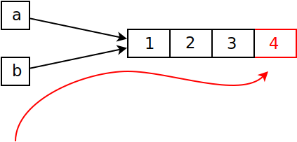

References, (Im)mutability¶
Immutability: Numbers¶
Numbers are immutable …
Object of type
intwith value 42Variable
apoints to it (“gives it a name”)The object cannot change its value - there is no method to modify an integer object
⟶ The latter situation is equivalent to the former (which is the implementation)
a = 42
b = a
Both print(id(a))
print(id(b))
140617948450920
140617948450920
|

|
Modifying An Integer In-Place? (Immutability)¶
id(a)
140617948450920
Operator
+=modifies an integer in-place?a = a+7modifies an integer in-place?⟶ No, both create new objects!
a += 1
id(a) # <--- different object now
140617948450952
a = a + 7
id(a) # <--- again, different object now
140617948451176
Immutability: Tuples¶
a = (42, "xy", 13)
b = a
print(id(a))
print(id(b))
140617633065024
140617633065024
|

|
And operator
+=?
a += ('foo', 'bar')
print(a)
print(id(a))
print(id(b))
(42, 'xy', 13, 'foo', 'bar')
140617664957232
140617633065024
⟶ leaves
balone
b
(42, 'xy', 13)
Mutability: Lists (1)¶
Lists are mutable …
Objects can be modified
E.g. by using
append()
a = [1, 2, 3]
b = a
b
[1, 2, 3]
b.append(4)
b
[1, 2, 3, 4]
a
[1, 2, 3, 4]
|
 |
{kind=link}
Mutability: Lists (2)¶
Danger …
Take care when passing complex data structures
Not passed by copy (as in C++)
Passed by reference (as in Java and C#, for example)
Solution?
Is copy a solution?
⟶ I’d say no!
Being careful is a solution!
a = [1, 2, 3]
b = a[:] # <--- copy
a.append(4)
b
[1, 2, 3]
Shallow Copy¶
A list within a list
Create “copy”
a = [1, [1, 2, 3], 2]
b = a[:] # <--- copy
b
[1, [1, 2, 3], 2]
This is only a shallow copy

Modify
a
a[1].append(4)
a
[1, [1, 2, 3, 4], 2]
And
b?
b
[1, [1, 2, 3, 4], 2]
Reason: nested list has not been copied!
a[1] is b[1]
True
Only first level copied
Shallow copy
a[1]is a referenceis: object identity
Deep Copy¶
Solution: not easy
Recursive structure traversal
Handling every possible type
Dedicated module in the standard library:
copySolution?
import copy
a = [1, [1, 2, 3], 2]
b = copy.deepcopy(a)
a[1] is b[1]
False